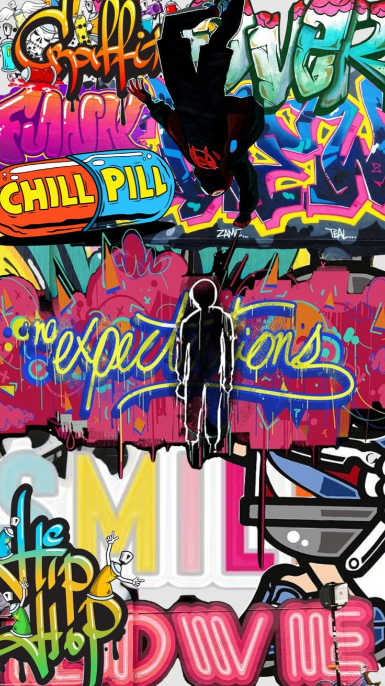
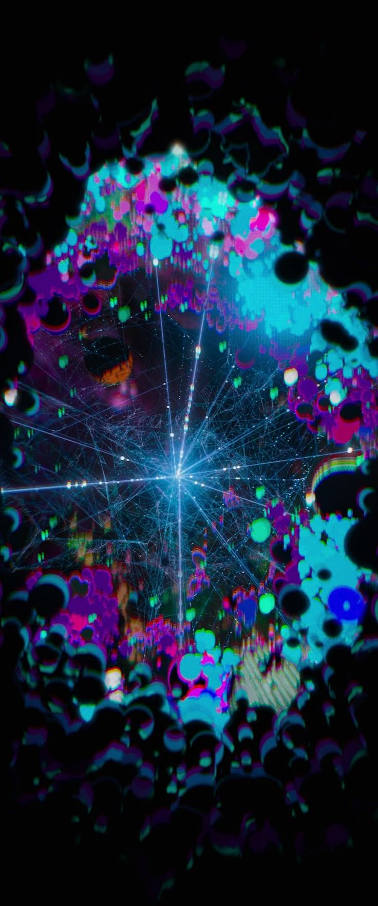
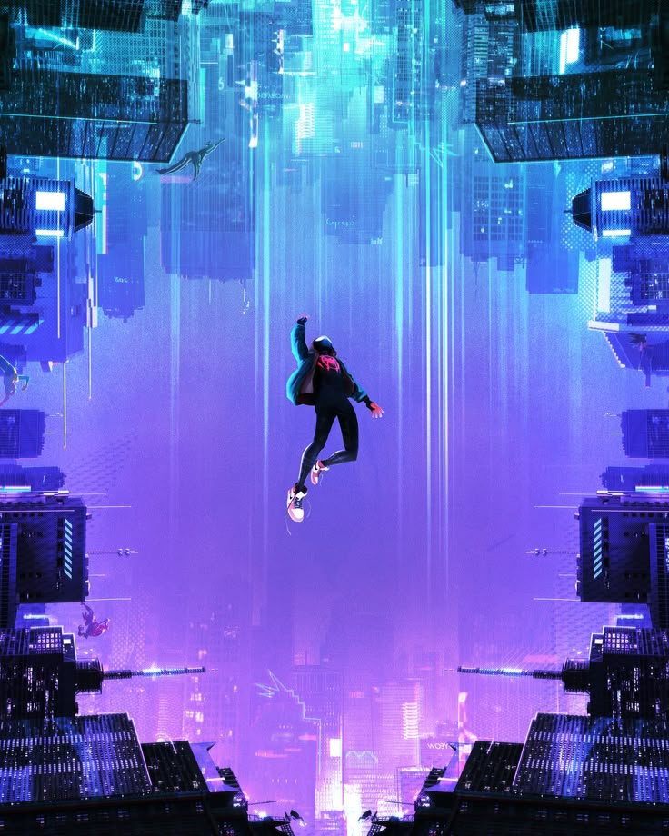
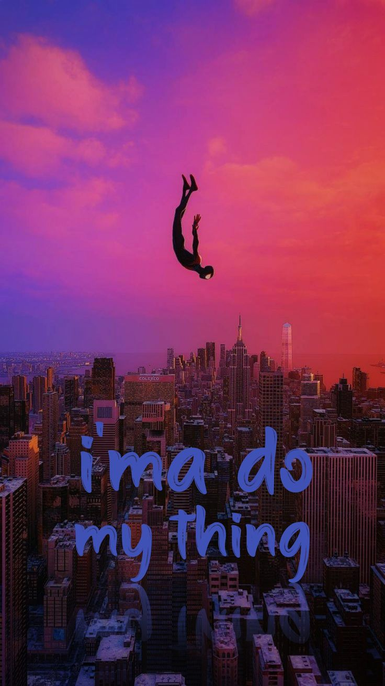
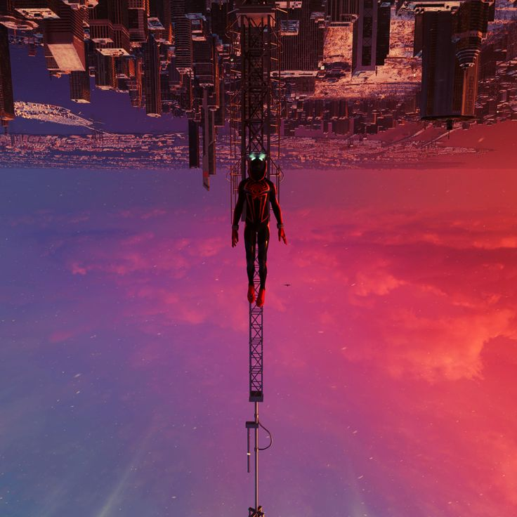
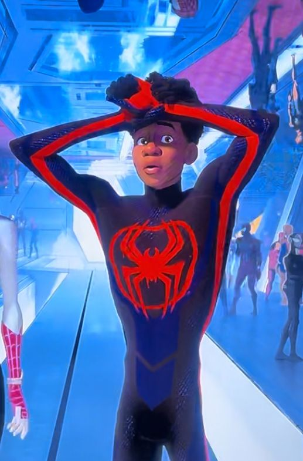
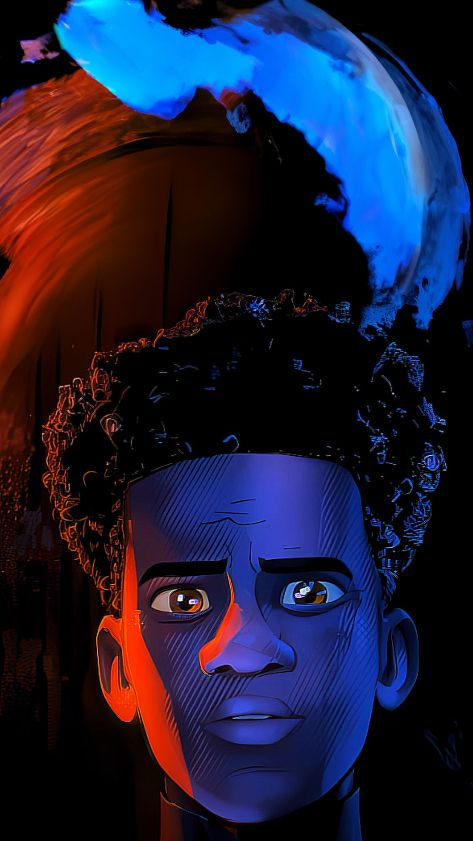

Galerie Spider-Verse









Miles Morales est un adolescent d'origine afro-américaine et portoricaine vivant à Brooklyn, New York. Il devient Spider-Man après la mort de Peter Parker dans son univers. Doté de pouvoirs uniques comme l'invisibilité et les décharges bioélectriques, il lutte pour équilibrer sa vie d'étudiant et ses responsabilités de super-héros.
Soutenu par ses parents, son oncle Aaron (le Rôdeur) et Gwen Stacy, Miles incarne la relève de Spider-Man, avec ses propres codes, valeurs et style.
Plonge dans l’univers parallèle de Spider-Gwen, son histoire, ses émotions, et son propre multivers.
🕸️ Aller sur le site de GwenMiles peut devenir invisible, parfait pour les attaques furtives et l'espionnage.
Il peut libérer une puissante onde électrique pour étourdir ses ennemis au contact.
Comme Peter, il utilise ses toiles pour se déplacer à toute vitesse dans la ville.
Réflexes, souplesse, et force lui permettent de réaliser des acrobaties spectaculaires.
Miles, c’est plus qu’un super-héros. C’est un reflet de ce que je suis ou veux devenir : un jeune qui cherche sa voie, qui doute parfois, mais qui finit toujours par trouver sa propre lumière. Il représente l’espoir, la diversité, la force tranquille. Son style, son courage et ses valeurs me rappellent que chacun de nous peut porter le masque et faire la différence.
Miles… il ne comprend pas toujours pourquoi Gwen agit comme elle le fait. Et pourtant, malgré toutes les trahisons apparentes, il continue de l’aimer. Pas aveuglément, mais avec ce genre d’amour qui pardonne, qui espère, qui veut encore croire que tout ça a du sens. Gwen est pour lui bien plus qu’une héroïne. Elle est ce lien à la douleur qu’il veut transformer en force.
Leur lien est fait de silences, de regards, de renoncements. Gwen a tenté de le sauver en l’écartant. Miles, lui, a décidé de revenir. Pas pour se venger. Pas pour prouver qu’il a raison. Mais pour dire : “Je suis Spider-Man. Et je décide qui je deviens.” Ensemble, ils sont chaos et beauté. Perdus dans un multivers… mais unis par ce qu’aucun algorithme ne peut mesurer : **la foi en l’autre**.
Tu es un fan de Miles ? Tu veux discuter avec d'autres passionnés ? Ce coin est pour toi.
Chargement...